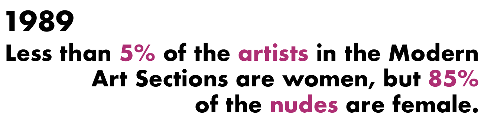

30 years since the inception of The Guerrilla Girls infamous poster, "Do Women Have To Be Naked To Get Into The Met Museum?", I began to question how has The Metropolitan Museum of Art (The Met) progressed? Are female nudes still predominantly on display? Since 1989, is The Met collecting more contemporary female artists? Through this data visualization, I explore these guiding questions and pay homage to The Guerrilla Girls who paved this path.
The graph above compares the solo male and female nudes in The Met's collection. Female nudes represent 60% of the collection, while male nudes represent 28% of the collection. Nudes with both genders represent 11% of the collection but were excluding in this comparative analysis. When the bar graph is rescaled, the largest decade for collecting female nudes in the 1980s (258 artifacts), followed by the 2000s (158 artifacts) after The Guerilla Girls poster was created. With this unequal balance in the nude collection, female nudes are still. predominantly on display. Below is a curated selection of the female nudes, based on acquisition of display to highlight this proportion.
The graph above breaks down the artist's gender of new acquisitions in the Modern Art Collection since 1989. Exploring the dataset, in the past 30 years the acquisitions have skewed towards male artists. The most objects by female artists were collected in 2009 (35 objects), when the collection acquired 11 pieces from the textile artist, Doris Tillett.